Passado de Mauricio
Seres de sombras
Seres feito completamente de sombras, sem rosto ou feição apenas olhos brancos gigantes. Refletem o Passado de Mauricio, monstrando a confusão em sua mente. Possuindo três formas diferentes(Chorosa, Selvagem e Feminina)
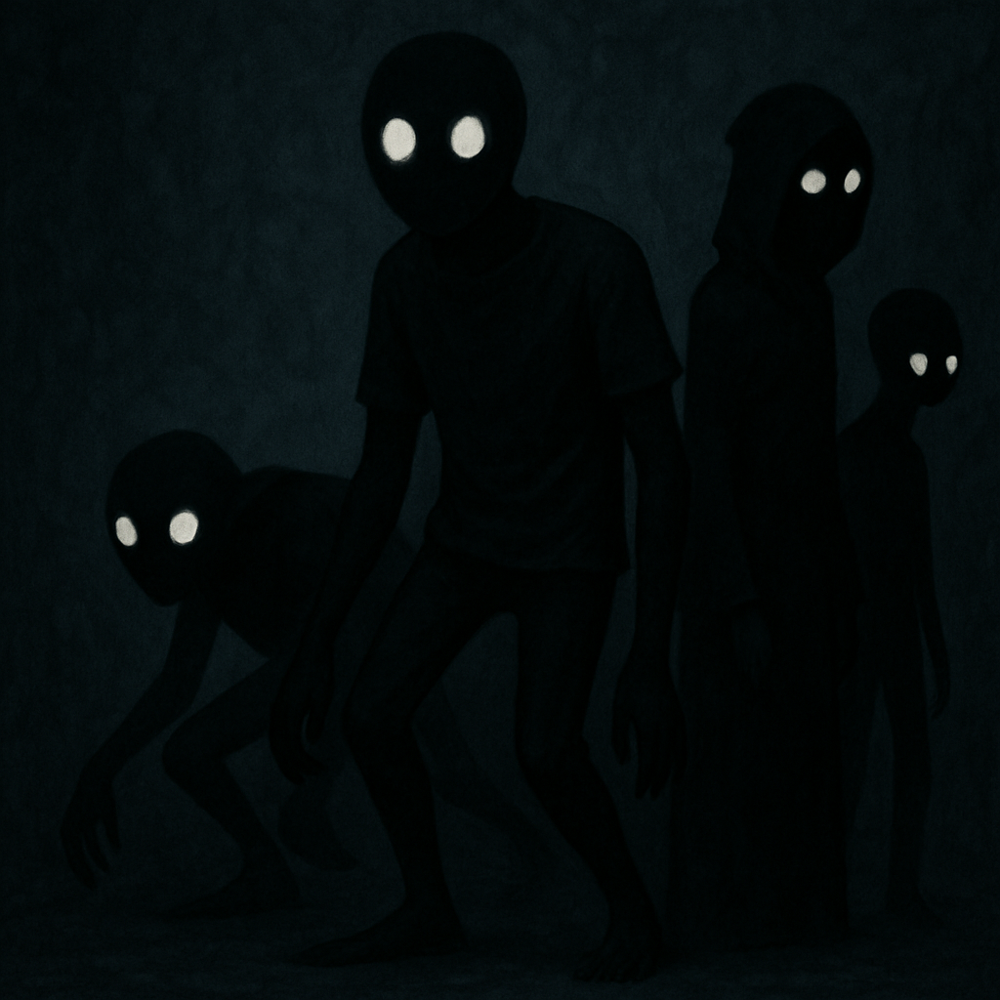Foto ilustrativa
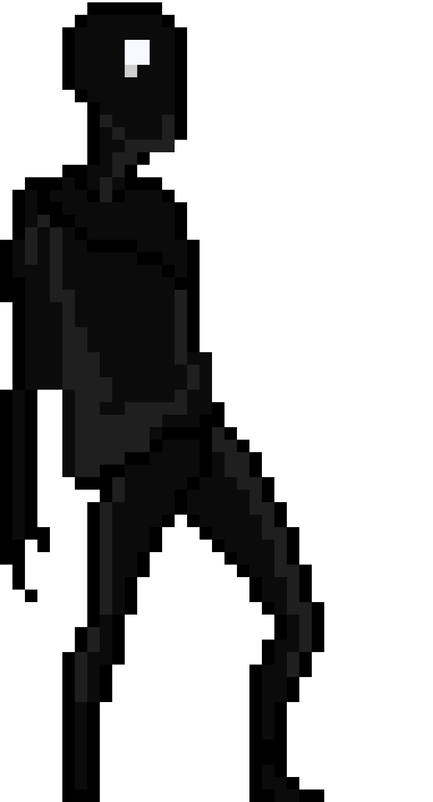Forma Chorosa
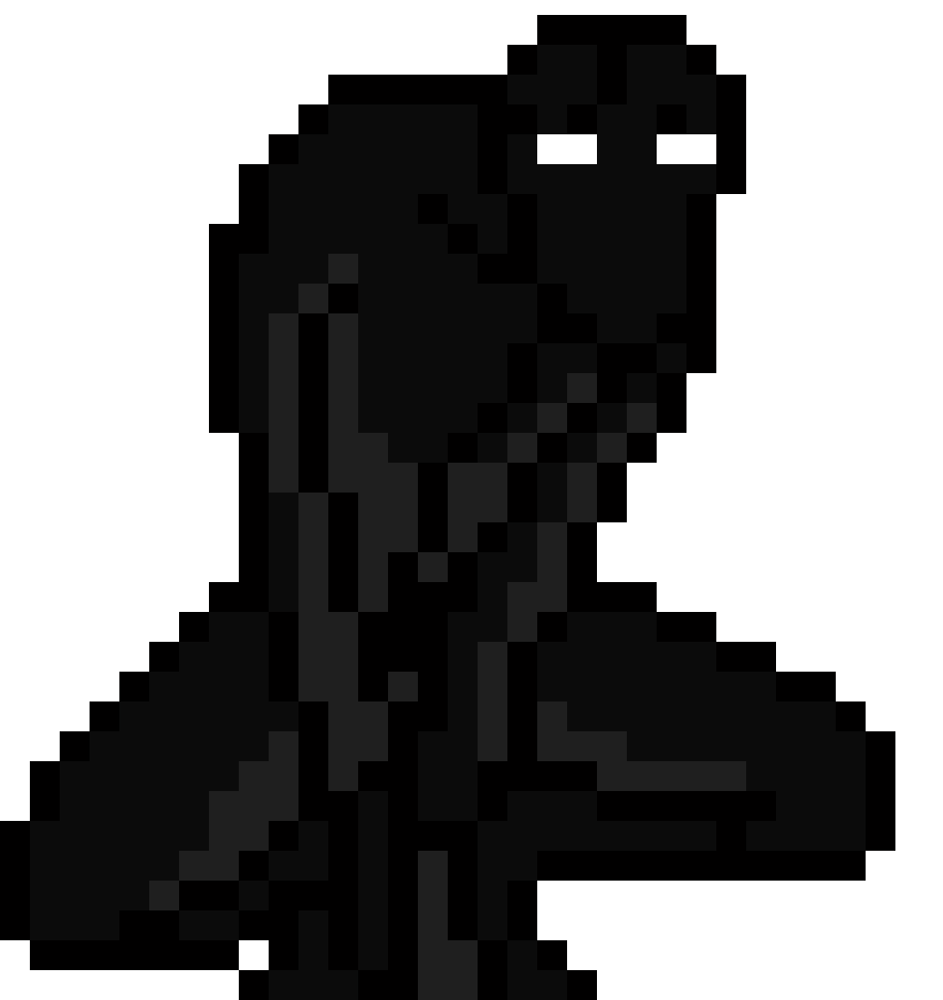Forma Selvagem
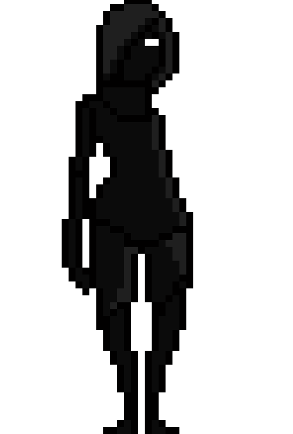Forma Feminina
Crianças Penadas
Formas espirituais de crianças que desapareceram e agora vagam como almas penadas, elas chegam perto de Mauricio logo depois somem, mas machucando bastante ele
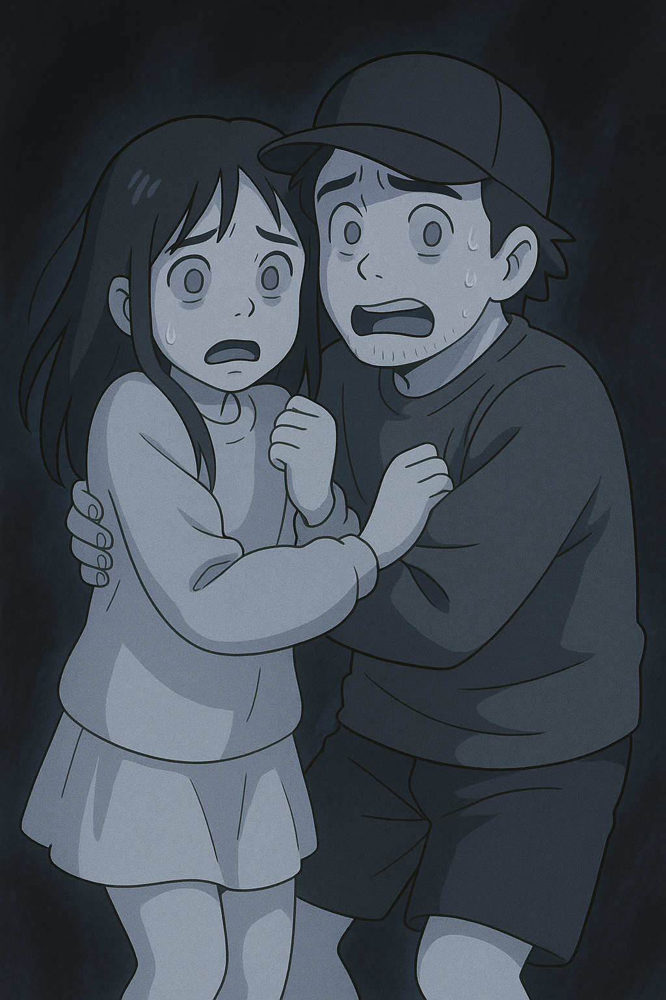Foto ilustrativa
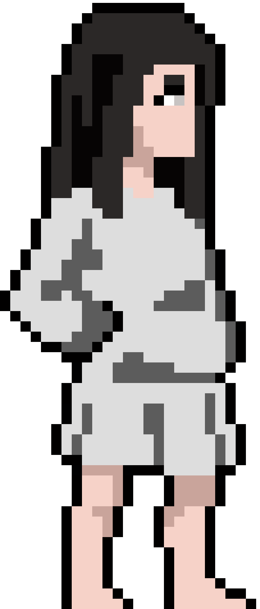Menina Assombrada
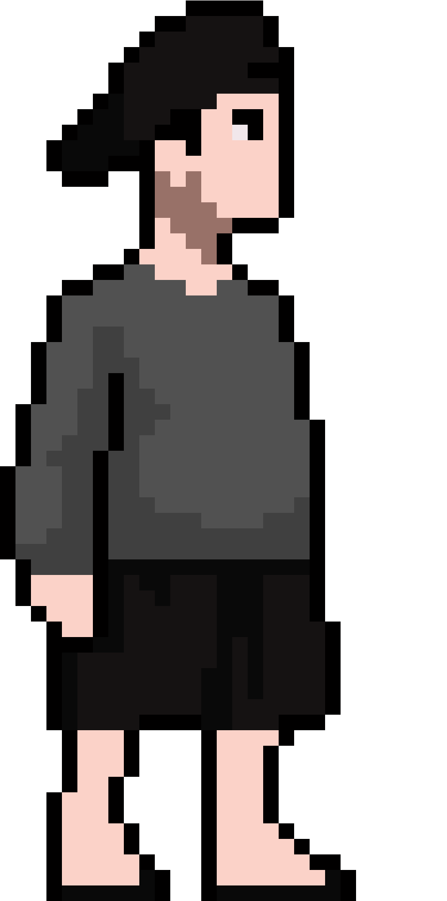Menino Assombrado
Corrompidos
Demonios que se disfarçam de crianças para atormentar ainda mais Mauricio, atacando quando menos espera e diferente das crianças atormentadas, eles não choram e não somem após o primeiro golpe
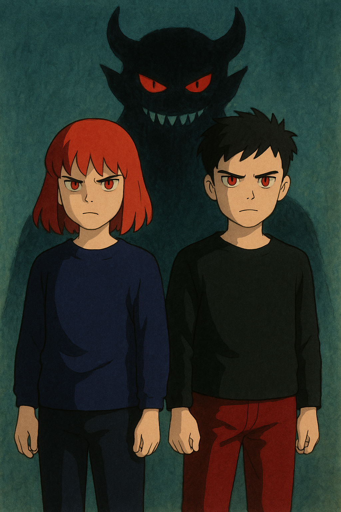Foto ilustrada
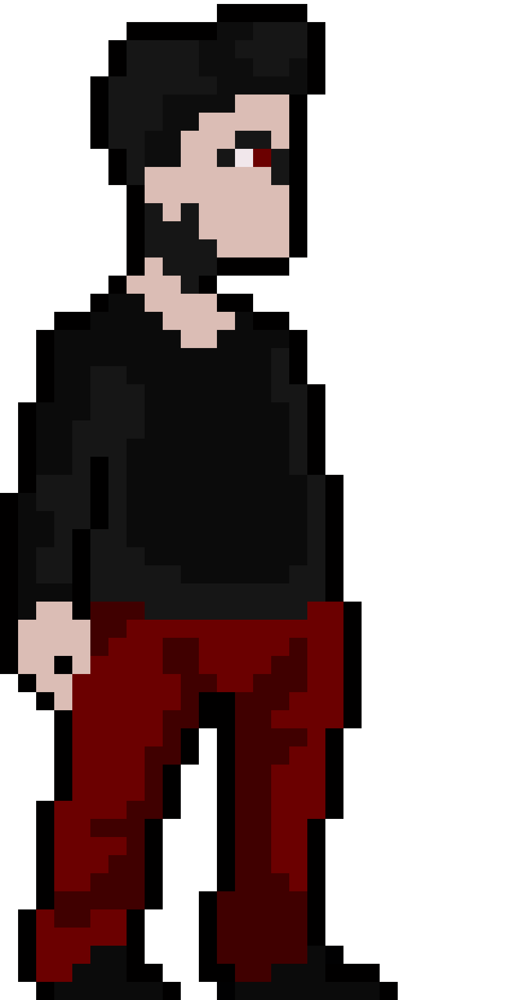Bellial
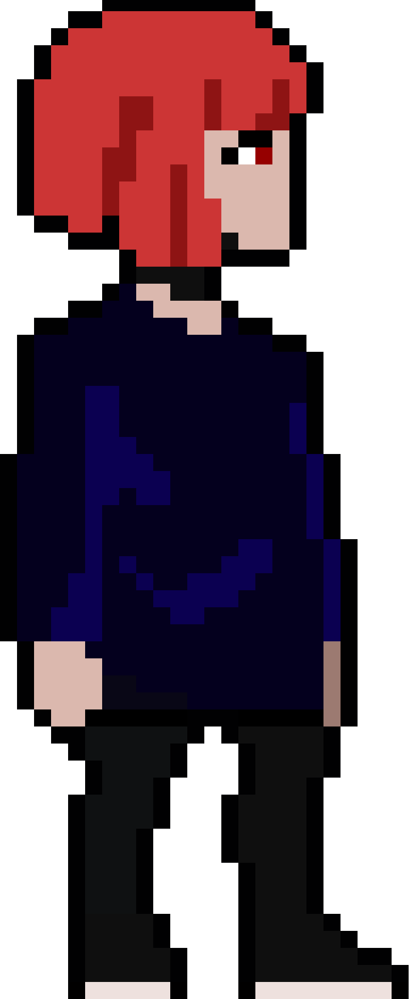Senrim
Demonios
Demonios que possuem formas distintas e com objetivo unico de atacar e destruir Mauricio. sendo diferente cada demônio
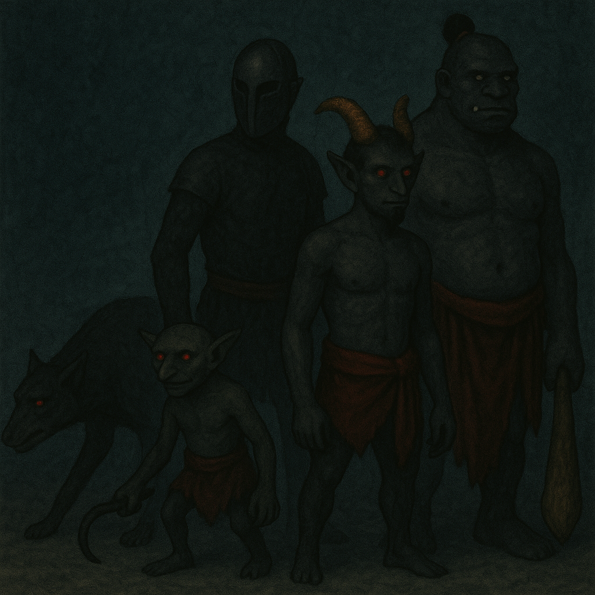Foto ilustrada
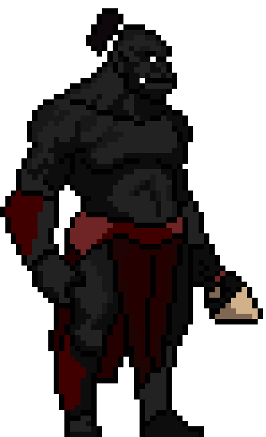Ogros
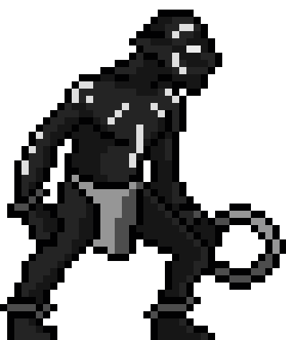Goblin

Sátiro

Cão do Inferno